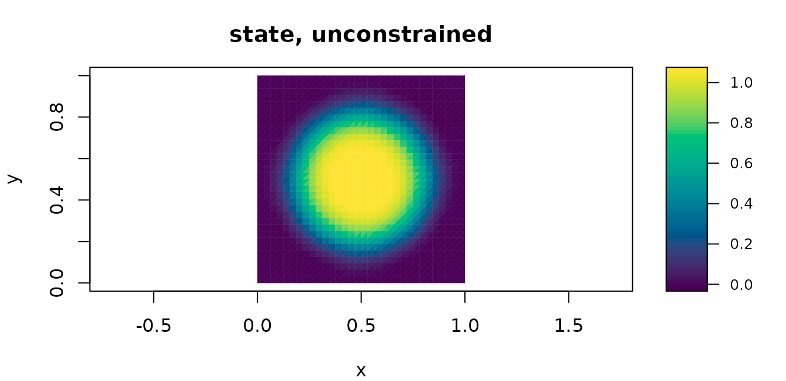
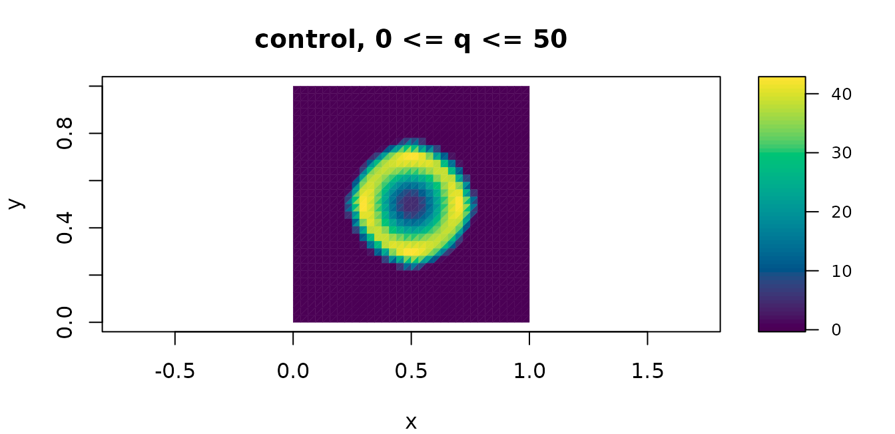

Sensitivities, inverse problems and optimal control
Source:vignettes/inverse-problems.Rmd
inverse-problems.RmdSensitivities of the discrete system
After Dirichlet elimination a parameterized linear problem is K(\theta)\mathbf u(\theta) = \mathbf r(\theta). If K is invertible and the data are differentiable,
K\frac{\partial\mathbf u}{\partial\theta_j} = \frac{\partial\mathbf r}{\partial\theta_j} - \frac{\partial K}{\partial\theta_j}\mathbf u .
This forward sensitivity costs one solve per parameter with the already factored K. For a scalar objective J(\mathbf u), the discrete adjoint solves K^\top\lambda = \partial J/\partial\mathbf u once and gives
\frac{dJ}{d\theta_j} = \lambda^\top\left(\frac{\partial\mathbf r}{\partial\theta_j} - \frac{\partial K}{\partial\theta_j}\mathbf u\right),
independent of the number of parameters. Both are discrete derivatives: they are the exact derivatives of the discrete model, which differ from derivatives of the continuous model by discretization error. The operator derivatives \partial K/\partial\theta_j and \partial\mathbf r/\partial\theta_j are formed by central differences of the assembled operators, which is exact up to rounding when the coefficients are affine in \theta.
A problem is parameterized by a function returning an elliptic problem:
mesh <- pde_mesh_rectangle(nx = 16)
pf <- function(theta) poisson_problem(mesh, diffusion = theta[1], source = 1,
boundary = dirichlet_bc(0))
s <- pde_sensitivity(pf, theta = 2)
# the exact derivative: u = u_1 / theta, so du/dtheta = -u / theta
max(abs(s$sensitivities[, 1] + s$solution$u$values / 2))
#> [1] 1.510601e-12With several parameters, forward, adjoint and finite-difference gradients agree:
pf2 <- function(theta) elliptic_problem(mesh, diffusion = function(x, y) theta[1] + theta[2] * x,
reaction = theta[3], source = 1, bcs = dirichlet_bc(0))
obs <- pde_observations(c(0.3, 0.6, 0.5), c(0.4, 0.5, 0.8), c(0.05, 0.1, 0.02), sd = 0.1)
J <- misfit_objective(fe_space(mesh), obs)
th <- c(1, 0.5, 0.3)
fwd <- pde_sensitivity(pf2, th, objective = J, method = "forward")$gradient
adj <- pde_sensitivity(pf2, th, objective = J, method = "adjoint")$gradient
fd <- sapply(1:3, function(j) {
e <- replace(numeric(3), j, 1e-5)
(J(solve_pde(pf2(th + e))$u$values)$value - J(solve_pde(pf2(th - e))$u$values)$value) / 2e-5
})
rbind(forward = fwd, adjoint = adj, finite_difference = fd)
#> [,1] [,2] [,3]
#> forward 0.1264122 0.07538522 0.007326827
#> adjoint 0.1264122 0.07538522 0.007326827
#> finite_difference 0.1264122 0.07538522 0.007326827Parameter estimation
Given point measurements y_i with
standard deviations \sigma_i,
estimate_parameters() minimizes
\frac12\sum_i\left(\frac{u_h(x_i;\theta) - y_i}{\sigma_i}\right)^2 + \frac\lambda2\|\theta - \theta_{\text{ref}}\|^2
with L-BFGS-B (bounds allowed) and adjoint gradients. Forward solves are cached so the objective and gradient at the same \theta share one solve.
Here we identify a diffusion coefficient k(x, y) = \theta_1 + \theta_2 x from 25 noisy observations of a solution computed on a finer mesh, which avoids the “inverse crime” of generating data with the same discretization:
pf3 <- function(theta, mesh) elliptic_problem(mesh, diffusion = function(x, y) theta[1] + theta[2] * x,
source = 1, bcs = dirichlet_bc(0))
truth <- c(0.5, 1.5)
fine <- solve_pde(pf3(truth, pde_mesh_rectangle(nx = 64)))
set.seed(1)
xo <- runif(25, 0.1, 0.9); yo <- runif(25, 0.1, 0.9)
sd_obs <- 2e-4
obs <- pde_observations(xo, yo, evaluate(fine$u, xo, yo) + rnorm(25, sd = sd_obs), sd = sd_obs)
est <- estimate_parameters(pf3, theta0 = c(1, 1), observations = obs,
mesh = pde_mesh_rectangle(nx = 16), lower = c(0.01, 0))
est
#> PDE parameter estimate (L-BFGS-B, convergence code 0)
#> estimate std_error
#> 1 0.48965 0.0025551
#> 2 1.50242 0.0072236
#> objective 7.105, gradient norm 2.204e-05, forward solves 13
#> standard errors: measurement noise only (Gauss-Newton linearization)
#> discretization check: predictions change by up to 0.000883 (4.415 sd) on a refined meshThe report keeps two sources of uncertainty apart:
- the standard errors come from the Gauss-Newton approximation (S^\top WS + \lambda I)^{-1} and reflect measurement noise only;
- the discretization check re-solves the model at the estimate on a uniformly refined mesh and reports how much the predicted observations change. If that change is comparable to the noise level, the mesh is too coarse for the data and the estimate is biased by discretization error.
Distributed optimal control
optimal_control() solves
\min_q\ \frac12\|u - u_{\text{target}}\|_{L^2}^2 + \frac\alpha2\|q\|_{L^2}^2 \quad\text{subject to}\quad -\nabla\cdot(k\nabla u) = f + q,
with the control q in the P1 space. The problem is strictly convex. Without bounds, the optimality (KKT) system
\begin{pmatrix} M & 0 & -K^\top \\ 0 & \alpha M & M^\top \\ K & -M & 0 \end{pmatrix} \begin{pmatrix} \mathbf u \\ \mathbf q \\ \lambda \end{pmatrix} = \cdots
is solved directly; with bounds the reduced problem is solved with L-BFGS-B and adjoint gradients.
target <- function(x, y) as.numeric((x - 0.5)^2 + (y - 0.5)^2 < 0.1)
oc <- optimal_control(pde_mesh_rectangle(nx = 32), target, alpha = 1e-5)
oc
#> Distributed optimal control (KKT (sparse LU))
#> objective 0.0157022, projected gradient norm 4.09e-15
#> control range [-43.3, 65.48]
ocb <- optimal_control(pde_mesh_rectangle(nx = 32), target, alpha = 1e-5, lower = 0, upper = 50)
ocb
#> Distributed optimal control (reduced L-BFGS-B (adjoint gradient))
#> objective 0.0260844, projected gradient norm 1.89e-08
#> control range [ 0, 42.75]
plot(ocb$control, main = "control, 0 <= q <= 50")
par(op)The discontinuous target cannot be reached exactly; the regularization \alpha trades tracking accuracy against control effort. For nonconvex problems (for example, coefficient identification with many parameters) a local optimizer finds a local minimum; no global optimality is claimed.